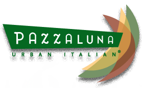

Adam Eastvold
Values
Understanding that all fields are bound together by those you have networked with, I have done my best to be a part of many projects in several different areas of study. The ability to ask what needs to be done and have the tools necessary to either find the path to the answer or to take care of it immediately is key. It is not in being the best leader, but the best teammate that will win any competition in business or otherwise. Truly the greatest form of art is helping others cultivate their own. These are some of my values and what has brought me to where I am today. Pursuing the field of coding is finding the means to bring different forms of work together into one coherent, easily accessible, interesting, inspiring place for anyone to view, use, and share.Experience
Sky Zone
Webmaster | Floor Manager
2014 - Current
Webmaster | Floor Manager
2014 - Current
Webmaster
Call Center Floor Manager

Pazzaluna
Server | Wait Assistant
Food Runner
2012 - 2014
Server | Wait Assistant
Food Runner
2012 - 2014
Paisley Park
Administrative Assistant
Stage Hand
Security
2007 - 2011
Administrative Assistant
Stage Hand
Security
2007 - 2011
Contact
4201 Park Avenue South
Minneapolis, MN 55407
adam.eastvold@gmail.com
Click here to contact me if you have any questions